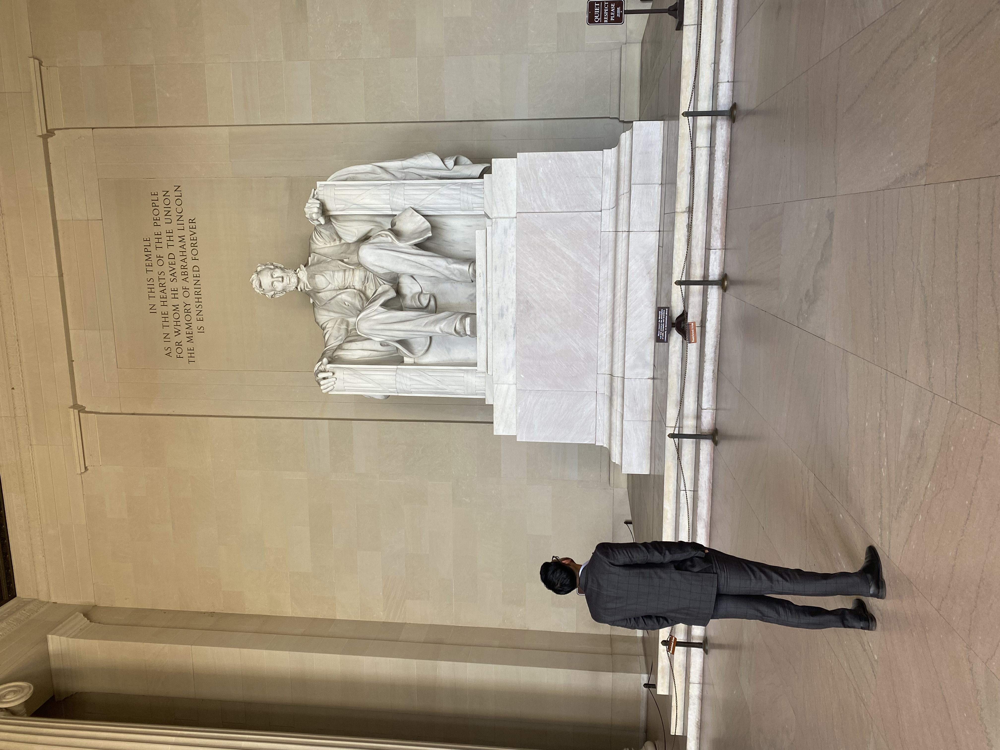

Background & Experience
Global Policy Professional
I am a global public policy professional who has provided strategic advice to state, national, international, and multilateral levels of government.
Currently, I work as a Project Manager and Policy Analyst at the Brookings Institution's Centre for Sustainable Development in Washington, D.C., where I contribute to the 17 Rooms initiative—a platform that convenes global experts, policymakers, and changemakers to drive actionable progress on the Sustainable Development Goals (SDGs).
Dedicated and driven, my professional ethos revolves around fostering robust working relationships, devising innovative solutions, and implementing strategic plans.
Professional Experience
Brookings Institution
Project Manager & Policy Analyst, Centre for Sustainable Development
Contributing to the 17 Rooms initiative, a platform driving actionable progress on the Sustainable Development Goals through global collaboration. Leading research on AI-human collaboration, health financing, and housing policy.
Australian Department of Foreign Affairs and Trade
Government, Economic and Public Diplomacy Manager
Managed diplomatic relations and economic partnerships between Australia and the United States West Coast region, strengthening bilateral ties and promoting trade opportunities.
Australian Government
Political Advisor (7 years)
Served as advisor to the Australian Minister for Trade and the Premier of South Australia. Worked on Australia's trade relationships with China, the UK, and the US, as well as the South Australian Government's pandemic response.

Academic Background
London School of Economics and Political Science
Master of Public Policy
DistinctionUniversity of Adelaide
Bachelor of Laws
Bachelor of Commerce